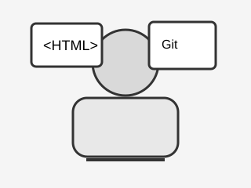

Початок шляху
Я вивчаю веброзробку з основ: спочатку HTML, далі CSS, JavaScript та сучасні інструменти фронтенду. Мені цікаво створювати зручні, логічні та доступні сторінки.

Мене звати Валерій. Я навчаюся фронтенд-розробці та поступово опановую HTML, структуру вебсторінок, роботу з Git і базові принципи створення сайтів.
Це портфоліо створене в межах лабораторної роботи з предмету Front end (25-26). Сайт написаний лише за допомогою HTML, без CSS та JavaScript.
«Кожна велика навичка починається з маленького практичного кроку».
Я вивчаю веброзробку з основ: спочатку HTML, далі CSS, JavaScript та сучасні інструменти фронтенду. Мені цікаво створювати зручні, логічні та доступні сторінки.
